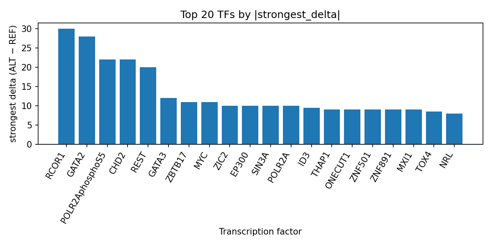

Author: snv-tf-researcher
Single-nucleotide variant rs3817971 (6:32393356 A>G; rs3817971-A risk allele) was selected for analysis in atopic asthma on the basis of effect size, and its local sequence context was annotated with intronic/downstream/non-coding transcript/3′ UTR consequences. Using AlphaGenome transcription factor (TF) ChIP-seq track predictions, the ALT allele was predicted to alter binding for multiple TFs, with prominent positive shifts for RCOR1, GATA2, POLR2AphosphoS5, CHD2, REST, GATA3, and other factors. These outputs are computational predictions rather than experimental measurements. The results prioritize TFs and regulatory contexts that may warrant follow-up in the locus, while acknowledging that the selected variant may be in linkage disequilibrium with the true causal variant. Experimental validation is required.
Atopic asthma is part of the broader allergic disease spectrum and is commonly considered alongside other atopic and allergic conditions in genetic and mechanistic studies [1-4]. Recent studies have continued to investigate shared genetic architecture, pleiotropy, and regulatory mechanisms across allergic phenotypes including asthma, atopic dermatitis, and allergic rhinitis [2-4]. More broadly, allergic inflammation is understood to involve coordinated innate and adaptive immune pathways, epithelial responses, and type 2-associated mechanisms [4].
Computational annotation of non-coding GWAS variants can help prioritize regulatory hypotheses by linking statistical associations to candidate transcriptional regulators. In this manuscript, AlphaGenome TF ChIP-seq predictions are used to interpret rs3817971 in atopic asthma. Because these outputs are computational predictions and not direct measurements, they should be treated as hypothesis-generating and require experimental validation.
The candidate variant rs3817971 (chromosome 6, position 32393356, A>G) was supplied as a GWAS-associated SNV for atopic asthma with p = 6 × 10^-7 and an absolute log-odds-ratio effect size of 1.255331096601078. Variant consequence annotations provided for the locus included downstream_gene_variant, intron_variant, non_coding_transcript_variant, and 3_prime_UTR_variant.
A workflow integrating disease/association retrieval, effect-size ranking and SNV filtering, consequence annotation and REF allele checking, AlphaGenome TF ChIP-seq prediction, TF-level summarization, literature retrieval, and AI-assisted manuscript synthesis is shown in the pipeline overview (Figure 1). AlphaGenome-derived TF ChIP-seq outputs were interpreted as computational predictions of ALT-versus-REF allele effects, not as experimental binding measurements. TF summaries were aggregated by transcription factor across available tracks, and the run-specific summary table is referenced in the results as top_tf_effects.tsv.
Figure 1. End-to-end workflow used for this run, from variant selection and sequence annotation through AlphaGenome TF ChIP-seq prediction, TF summarization, literature retrieval, and manuscript generation. The schematic emphasizes that the TF effects reported here are computational predictions and require experimental follow-up.
AlphaGenome predictions suggested that rs3817971-A is associated with increased TF ChIP-seq signal across multiple factors, with the strongest positive effect observed for RCOR1 (max delta 30.0 across 2 tracks) (Figure 2). GATA2 also showed consistently promoted tracks (6 tracks; strongest delta 28.0), followed by POLR2AphosphoS5 (26 tracks; strongest delta 22.0), CHD2 (6 tracks; strongest delta 22.0), and REST (17 tracks; strongest delta 20.0). Additional promoted TFs included GATA3, ZBTB17, MYC, EP300, SIN3A, POLR2A, ID3, MXI1, ZIC2, and others as summarized in top_tf_effects.tsv.
The TF profile was broadly skewed toward predicted promotion rather than inhibition. Among the top summarized TFs, several factors had exclusively promoted tracks, including RCOR1, GATA2, CHD2, GATA3, ZBTB17, ZIC2, EP300, SIN3A, and several others. A smaller number of TFs exhibited mixed directions, such as REST, MYC, EP300, ID3, FOSL1, and MAX, indicating that the locus may influence multiple regulatory proteins in a context-dependent manner.

Figure 2. Top TFs ranked by the strongest signed AlphaGenome-predicted ALT-vs-REF ChIP-seq delta at rs3817971. Positive bars indicate predicted promotion of TF signal by the ALT allele, and negative bars indicate predicted inhibition; the displayed values reflect the strongest per-TF effect across available tracks.
The predicted TF perturbation pattern at rs3817971 prioritizes transcriptional regulators associated with chromatin regulation and RNA polymerase occupancy, including RCOR1, GATA2, CHD2, REST, POLR2AphosphoS5, and POLR2A. In the context of atopic asthma, this pattern is consistent with the idea that non-coding variants may alter regulatory activity at loci relevant to allergic disease biology [2-4]. The prominence of multiple promoted TF tracks suggests that the allele substitution could reshape local regulatory potential, although the direction and magnitude are model-based predictions rather than measured molecular phenotypes.
These results may be useful for downstream experimental design, including selection of candidate TFs and cell types for validation. However, no direct functional inference should be drawn beyond prioritization, and experimental assays are needed to confirm whether the predicted TF effects occur in relevant biological systems. More broadly, the study aligns with the growing use of genetic and regulatory analyses to interpret allergic disease loci [2-4].
This analysis has several limitations. First, AlphaGenome outputs are computational predictions and not direct binding measurements, so the reported TF effects require experimental validation. Second, rs3817971 was selected on the basis of effect size and may be in linkage disequilibrium with the true causal variant, so the observed predictions may reflect a proxy signal rather than the causal nucleotide. Third, the manuscript is based on a single candidate locus and does not establish locus-wide or genome-wide generalizability. Fourth, the provided literature list contains recent studies and reviews on allergic disease genetics and pathogenesis, but none specifically establish a functional role for rs3817971. Finally, no nearest-gene assignment was provided, limiting locus-to-gene interpretation.
Bi J, Bi J, Ni X, Lu L, Yin T, Mao S, et al. Bidirectional causal association and shared anti-inflammatory target of asthma and atopic dermatitis: a Mendelian randomization and colocalisation study. BMC Pulm Med. 2025;26(1):5. PMID: 41291613. doi:10.1186/s12890-025-04042-9
Zhang PA, Wang JL, Fu SY, Luo HL, Li NJ, Qin RD, et al. Genetic correlations and causal relationships among allergic diseases: a comprehensive Mendelian randomization study with multiomic mediation analysis. Mediators Inflamm. 2026;2026(1):e5466012. PMID: 41954291. doi:10.1155/mi/5466012
Caraballo L, Llinás-Caballero K. Overview of allergic disease: pathogenesis of allergic inflammation - WAO White Book on Allergy 2026 - 2.1. World Allergy Organ J. 2026;19(5):101384. PMID: 42028242. doi:10.1016/j.waojou.2026.101384
Husain I, Patel K, Holden C, Jervis L, Barnard K, Youssef E, et al. Skin barrier-related genes in childhood atopic dermatitis, asthma, and allergy: a systematic review and meta-analysis. Pediatr Allergy Immunol. 2026;37(4):e70326. PMID: 42025449. doi:10.1111/pai.70326